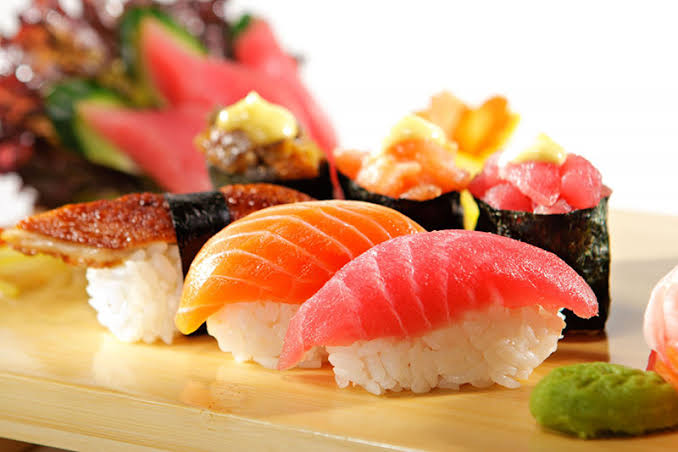
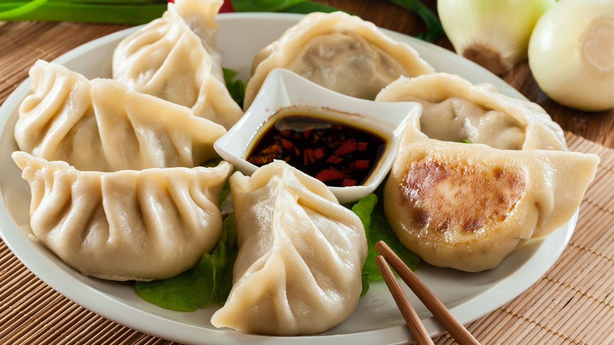

Más pedida
$13.50
Tonkotsu Kuro

Caldo de cerdo 18 horas, aceite de ajo negro, chashu lacado, ajitama cremoso y cebolleta. El clásico que fundó la casa.
El menú
Nuestro menú ofrece una amplia variedad de platillos inspirados en la gastronomía japonesa, combinando sabores tradicionales, ingredientes frescos y una presentación cuidadosamente elaborada.
Caldo de cerdo 18 horas, aceite de ajo negro, chashu lacado, ajitama cremoso y cebolleta. El clásico que fundó la casa.

Miso con mantequilla, maíz asado, wakame y cerdo desmenuzado. Cuerpo profundo para días fríos.

Salsa de soya artesanal, dashi de bonito, naruto, huevo marinado y brotes crujientes. Ligero, limpio, eterno.

Sésamo, chili de Sichuan, carne picada crocante y aceite rojo flotando como lava. Firma el disclaimer.

Caldo claro de sal marina, cítrico yuzu, pollo tierno y verduras de estación. Frescura que abraza.

Cinco hongos, caldo de kombu shiitake, tofu sedoso y aceite de sésamo tostado. Cien por ciento vegetal.

Rollos perfectos que combinan la frescura del mar, arroz saazonado a la perfección y texturas crujientes. Una explosión de sabor sutil, fresca y sofisticada en cada pieza.

Deliciosas empanadillas japonesas preparadas al estilo tradicional: doradas a la plancha por fuera para un toque crujiente.